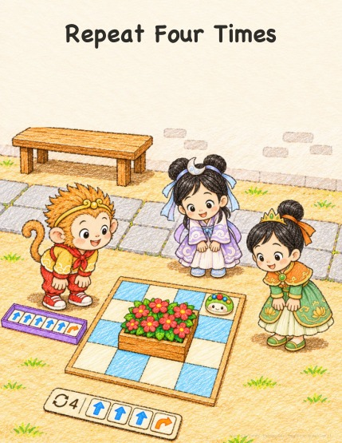

Wukong
Wukong 
Repeat Four Times
Princess Iron Fan wants a parade around her new flower box. Wukong lays out arrow cards for Little Bean again and again until the forward cards run out. Chang’e sees the same four cards come back and draws one repeat card. Five cards do the job of sixteen!
English bedtime picture book · About age 5.5 · Free to read and print
Read a little adventure.
Turn the page with the buttons, arrow keys, or a swipe.

This page could not load. Please try again, or download the PDF.
Download PDFRepeat Four Times
© 2026 Peihong GuoLicensed under CC BY-NC-ND 4.0
Page 1 of 18
Keep a copy for later: Download PDF
How do I print a little book?
Download the booklet edition. Print on US Letter, landscape, double-sided with short-edge flipping, at actual size / 100%, one PDF page per sheet, in normal page order. Each PDF page already contains two book pages.
The print booklet has 20 pages, including covers and an author page. The inside back cover is intentionally left quiet.
This book uses 5 sheets, with 0 blank book pages added at the end. Nest the sheets, fold through the center and staple along the fold.
Current reading and print files
The current English and Chinese editions are available below. Reading and booklet PDFs carry a subtle attribution watermark.
- v1 — Reading PDF · Booklet PDF
Edition history
- v1 · — First edition.
Help the next story grow.
Stories are free to read and print. If you and your child enjoy them, you are welcome to support more stories.